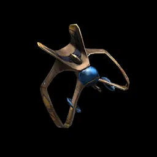
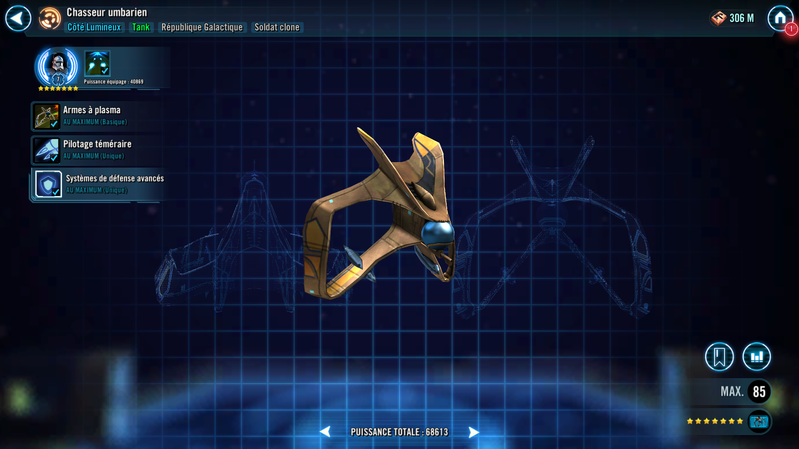
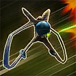
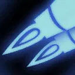

Umbaran Starfighter
Risky Clone Tank that inflicts great damage and debuffs, but grants Turn Meter to enemies

Risky Clone Tank that inflicts great damage and debuffs, but grants Turn Meter to enemies


Deal Physical damage to target enemy and inflict Offense Down and Defense Down for 2 turns.
Target Lock: Dispel all buffs on Target enemy.
Inflict Target Lock for 2 turns on target enemy, which can't be Resisted, then deal Physical damage to each Target Locked enemy. This attack deals +20% damage for each Target Locked enemy.

Whenever Umbaran Starfighter attacks, it gains 30% Turn Meter and target enemy gains 20% Turn Meter. Additionally, when Umbaran Starfighter attacks, it gains 5% Offense (stacking) and loses 5% Defense (stacking) until the end of the encounter.

Enter Battle : Remove 25% Turn Meter from all enemies, which can't be Evaded, and grant all allies Defense Up for 2 turns. Then, inflict Target Lock on all enemies with 0% Turn Meter, which can't be Evaded or Resisted.